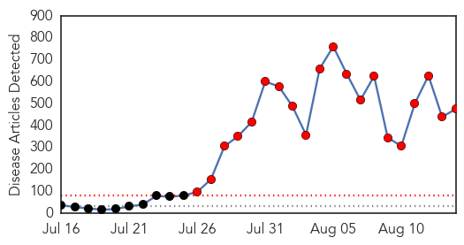
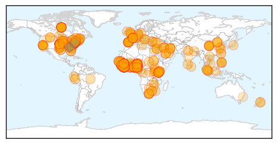
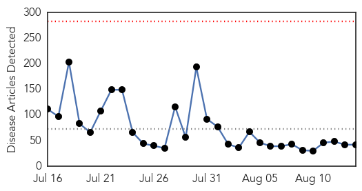
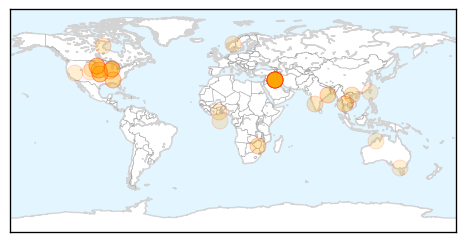

Ebola
30-Day Web Trend
20 alerts, 0 warnings

30-Day Twitter Trend
13 alerts, 1 warnings

Article Locations
Article Confidences

Top Articles:
- 1.000
- GCC health ministers take unified stance to combat Ebola
- 1.000
- Ebola: UN health agency says more than 1 million people affected by outbreak
- 1.000
- Past epidemics have readied Canada for Ebola
- 1.000
- China sends medical experts to West Africa
- 1.000
- Consignment of Experimental Ebola Drug Arrives in Liberia, Articles
- 1.000
- Health services falter as Kenya becomes Ebola risk
- 1.000
- Ebola : Zim ill-prepared for deadly disease
- 1.000
- Containing the International Spread of Ebola
- 1.000
- Ebola: UN health agency seeks to allay fears about air travel
- 1.000
- South Africa steps up Ebola precautions
- 1.000
- Peru prepared to detect Ebola virus within 24 hours
- 1.000
- Ebola: UN health agency seeks to allay fears about air travel
- 1.000
- Experimental Ebola drugs arrive in Liberia
- 1.000
- Ebola Crisis in Africa: World Health Organization Warns Kenya of Being on High Risk to Ebola Infections
- 1.000
- Ebola outbreak: Guinea declares emergency
- 1.000
- Ebola: UN health agency seeks to allay fears about air travel
- 1.000
- Ebola Fears Cloud Jehovah's Witnesses Meeting in Zimbabwe
- 1.000
- International cooperation crucial for Ebola
- 1.000
- Ebola Fears Cloud Jehovah's Witnesses Meeting in Zimbabwe
- 1.000
- UN Says 1 Million Affected in Ebola-Hit Countries, Doctor's Death Worries Health Departments
- 1.000
- Ebola: The Best Way to Predict Ebola Outbreak's Future Is to Invent It
- 1.000
- Ebola: UN health agency seeks to allay fears about air travel
- 1.000
- Guinea Declares Public Health Emergency Over Ebola
- 1.000
- UN health agency seeks to allay fears about air travel
- 1.000
- Ebola crisis: Air travel is low risk - WHO
- 1.000
- The Economist
- 1.000
- Ebola: UN health agency seeks to allay fears about air travel
- 1.000
- Ebola drug Zmapp finally arrives in Africa
- 1.000
- Ebola drug Zmapp finally arrives in Africa
- 1.000
- Ebola drug Zmapp finally arrives in Africa
- 1.000
- Ebola: UN health agency seeks to allay fears about air travel
- 1.000
- Nigeria Reports One More Ebola Case, 11 In Total
- 1.000
- Ghana, Business Advice, Jobs, News, Business Directory, Real Estate, Finance, Forms, Auto
- 1.000
- Ghana, Business Advice, Jobs, News, Business Directory, Real Estate, Finance, Forms, Auto
- 1.000
- Air Travel Is Low Risk, Says WHO
- 1.000
- Ebola: UN health agency says more than 1 million people affected by outbreak
- 1.000
- Ebola Fears Cloud Jehovah's Witnesses Meeting in Zimbabwe
- 1.000
- Evidence suggests Ebola toll vastly underestimated - WHO
- 1.000
- Police question 2 who spread rumor of Ebola infection in Vietnam
- 1.000
- More than one million people affected by Ebola outbreak: WHO
- 1.000
- Coastal health director says Ebola no threat in Savannah area
- 1.000
- Guinea declares health emergency as Ebola outbreak worsens — RT News
- 1.000
- China continues to send experts, supplies to Ebola-hit African countries - Xinhua
- 1.000
- How health officials are responding to the Ebola outbreak globally - National
- 1.000
- Health Minister
- 1.000
- SA health ministry calls urgent meeting
- 1.000
- AU pledges $1 million to stop Ebola
- 1.000
- Ebola outbreak: Kenya at high risk, warns WHO
- 1.000
- Ebola: UN health agency says more than 1 million people affected by outbreak
- 1.000
- What Is Ebola Virus and to what extent is Armenia ready to confront Ebola outbreak
Showing top 50 articles...
Top Tweets:
- 0.741
- RT: CDC’s Global Disease Detection Program strengthens global capacity to rapidly detect disease threats such as Ebola. http://…
- 0.678
- Recent panic over a possible ebola case in NYC helps highlight how ebola may make malaria more deadly in Africa. http://t.co/XbdfiwaeIc
- 0.619
- RT: Ebola spreads in Africa thru inadequate infection control & thru burial ceremonies that expose ppl to body fluids. http://t…
- 0.590
- But not sure there is evidence IFN treatment works well for Ebola in monkey studies
- 0.523
- RT: Nigeria: Nurses chase suspected Ebola patient out of hospital. "Lady had blood oozing from her nostrils and mouth." htt…
- 0.502
- RT: Like all CDC staff DiseaseDetective Greg is as aware of the risks of working w/ Ebola in W Africa. Read his story: http://t.…
Unknown
30-Day Web Trend
0 alerts, 0 warnings

30-Day Twitter Trend
6 alerts, 1 warnings

Article Locations
Article Confidences

Top Articles:
- 0.946
- Fear of epidemic grips flood-hit Kendrapada
- 0.925
- RTI International, Government of Zimbabwe’s Ministry of Health and Child Care Launch New Health Information System in Zimbabwe
- 0.919
- Certain SD state workers required to get flu shot; gov says move is good public health policy
- 0.917
- Chicago Tribune
- 0.917
- Chicago Tribune
- 0.917
- Chicago Tribune
- 0.915
- 2 more TB cases identified in southern Sask. students
- 0.910
- The world windows to Thailand
- 0.909
- Certain SD state workers required to get flu shot
- 0.866
- Evidence suggests Ebola toll vastly underestimated
- 0.866
- Iraq's Maliki to deliver televised speech shortly
- 0.866
- Obama speaks to presidents of Liberia, Sierre Leone about Ebola
- 0.866
- U.S. Embassy dependents to leave Sierra Leone due to Ebola
- 0.866
- Governor of Iraq's Sunni heartland seeks U.S. help against militants
- 0.866
- Shelling comes close to centre of Ukraine's Donetsk for first time
- 0.866
- Putin says Russians do not need conflict with outside world
- 0.866
- Finnish President to meet Putin in Russia
- 0.866
- Riot police clear a street of demonstrators in Ferguson, Missouri
- 0.866
- A protester throws back a smoke bomb while clashing with police in Ferguson, Missouri
- 0.800
- Health officials investigating 3 cases of tuberculosis between Regina and Moose Jaw
- 0.793
- Vietnam detects first A/H5N6 virus in poultries
- 0.785
- Rabies killing children in Ashanti region
- 0.755
- Pfizer's Prevnar 13 Backed by U.S. Panel for Expanded Use
- 0.719
- Govt aware of single case of tiger mortality due to virus
- 0.693
- Worst TB outbreak in 5 years hits Alabama prisons
- 0.689
- CDC: Outbreak Linked to Organic Sprouted Chia Powder Produced Three Salmonella Strains
- 0.645
- Health official: NE Nebraska tuberculosis cases could be tied to
- 0.637
- Health officials in NE Nebraska continue to investigate two conf
- 0.632
- Petting zoos can suck: Second outbreak of infection with a rare Cryptosporidium parvum genotype in schoolchildren associated with contact with lambs/goat kids in Norway
- 0.612
- Health Department Looking For Those Who Had Contact With Student With Tuberculosis
- 0.610
- US advisory panel recommends Prevnar 13 vaccine for older adults
- 0.602
- Prosecute people who fail to immunize their pets- Dr. Anthony Enimil
- 0.592
- Patients Deprived of Medical Assistance
- 0.575
- Alabama Facing 'Serious' Tuberculosis Outbreak In Prisons
- 0.549
- Massachusetts hospitals report significant increase in patient safety problems
- 0.548
- Government covers medical costs of drug overdose patients
- 0.533
- HIV drugs inhibit prostate cancer virus
- 0.528
- CGIC, Maxicare ink pact for healthcare
- 0.523
- U.S. advisory panel recommends Prevnar 13 vaccine for elderly
- 0.522
- Increasing Cases of Meat Allergy Triggered by Tick Bite
- 0.511
- Student tests positive for tuberculosis
- 0.501
- Austin Health hospital mistakenly 'kills off' over 200 patients sending death notices to GPs
Top Tweets:
-
No tweets found for Aug 14, 2014